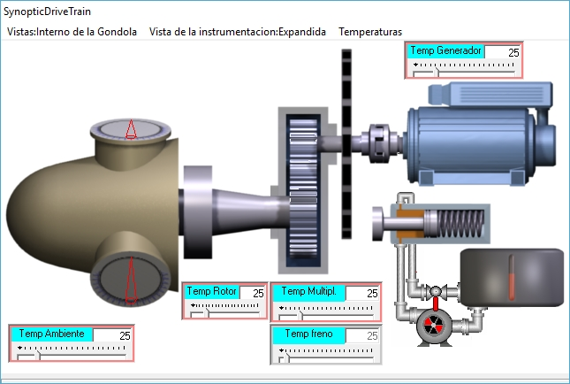

Objectivo:Para aprender a monitorar o circuito hidráulico usando variáveis de pressão e status para detectar desvios.
O que observar:Pressões do sistema, status da bomba e válvula e possíveis alarmes.
O que observar:Valores operacionais normais e qual variável muda primeiro quando ocorre uma anomalia.
□ Identificar o elemento que se desvia primeiro quando ocorre um alarme.
Este exercício prático envolve observar a reação do controlador quando os sensores de temperatura de vários componentes chave excedem os limites para a operação normal.
Certifique-se de que a turbina eólica está em produção (verDefinição das condições de entrada em produção com vento baixo).
Mostrar o sinóptico "SynopticDriveTrain" (verComo trazer um sinóptico específico para o primeiro plano).
Mudar a Vista (primeira opção no menu) para "Dentro da Nacelle." Defina a "Visão de Instrumentação" como "Escondido" (segunda opção no menu), e clique na terceira opção, "Temperaturas", para exibir os indicadores de temperatura. Veja a figura a seguir.

O "Temperatura ambiente," "Temperatura do rotor," "Temp multiplicador," e "Temp do gerador" indicadores têm uma fronteira vermelha, o que significa que eles estão em'comando 'modo. Você pode modificar seus valores de várias maneiras:
• Pormover a barra com o rato.
•Usando as teclas "Page Up", "Page Down", "Up Arrow" e "Down Arrow".
• Pordigitando o valor desejado diretamente. Se você alterar o valor e a tela não corresponder à anterior, o fundo fica amarelo: você deve pressionar "Enter".
O Controlador monitora continuamente os valores nesses indicadores, comparando-os com os valores dos parâmetros "Controller.TempMaxGenerator," "Controller.TempMaxGearBox," "Controller.TempMaxAmbient," e "Controller.TempMaxRotorBearing."
Neste exercício, você deve aumentar o valor em cada um desses indicadores e observar que, quando a temperatura excede o valor do parâmetro correspondente por um determinado período de tempo, o Controlador inicia um processo para desconectar da grade e parar a turbina eólica, gerando um incidente específico.
Se a temperatura cair abaixo do limite uma vez que o incidente ocorreu, você verá que a coluna "Recoverd" na tabela "Open Incidents" registra o momento em que isso acontece.
Note that the treatment of "Ambient Temp" is different from the others: when the maximum allowable ambient temperature is exceeded, the corresponding incident is generated, with the wind turbine stopping; however, as soon as this temperature drops below its maximum limit, the incident automatically moves to the "Incident History." In other cases, the operator must "acknowledge" the incident (checkbox "Ok") before it is moved to the "Incident history."